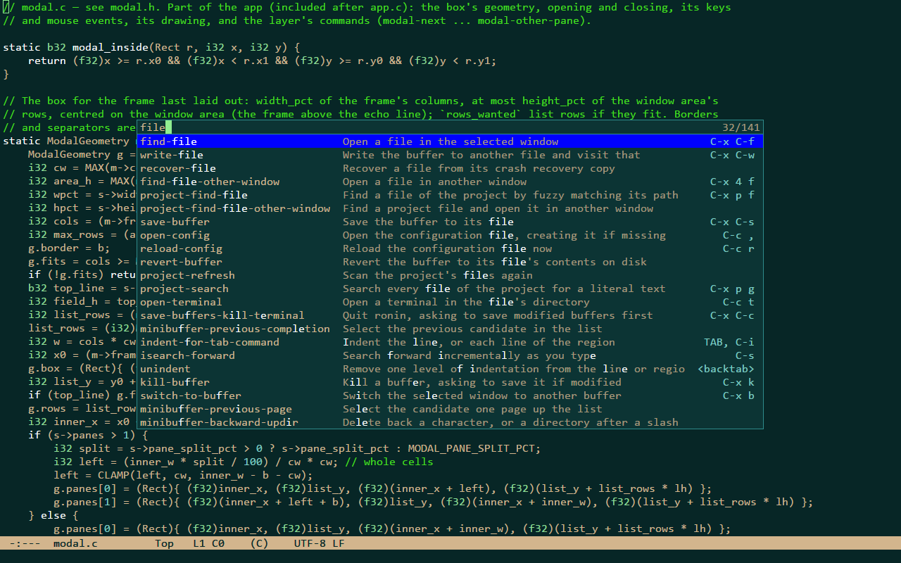

First steps
Key notation
Keys are written as in Emacs: C- is Ctrl, M- is Alt, S- is Shift; RET is Enter, SPC the space bar, DEL
Backspace; C-x C-s means Ctrl+X, then Ctrl+S. A key matches by the character it types in your keyboard layout: C-/
is Ctrl with whichever key types /. Unlike Emacs, ESC cancels (as C-g does).
The first keys
| keys | command | what it does |
|---|---|---|
C-f C-b C-n C-p | forward-char backward-char next-line previous-line | move by a character or a line (or the arrows) |
C-x C-f | find-file | open a file, with completion |
C-x C-s | save-buffer | save |
C-x C-c | save-buffers-kill-terminal | quit, asking about unsaved files |
C-g | keyboard-quit | cancel whatever is going on |
C-/ C-? | undo undo-redo | undo, and go forward again |
C-SPC | set-mark-command | start a region (or hold Shift while moving) |
C-w M-w C-y | kill-region kill-ring-save yank | cut, copy, paste |
C-s C-r | isearch-forward isearch-backward | search as you type |
M-% | query-replace | replace, asking at each match |
C-x b | switch-to-buffer | another open file |
C-x 3 C-x o C-x 1 | split-window-right other-window delete-other-windows | windows side by side |
M-x | execute-extended-command | run any command by name |
C-S-p | show-command-list | every command, what it does and its keys; type to filter, RET runs |
C-h k | describe-key | what a key does |
C-c , | open-config | open the configuration file |
The command list
C-S-p lists every command with a one-line description and its keys in the current window. Typing filters it (fuzzy,
on the name, the description or both); the arrows, C-n / C-p and C-v / M-v move; RET or a double click runs
the selected command as M-x would; C-g, ESC or a click outside close it.

M-x
M-x reads a command's name in the minibuffer, with completion: a candidate matches when every space-separated word of
the input occurs in it, ignoring case. TAB completes, RET runs the selected candidate, C-g gives up. Every command
has a name, so a command without a key is one M-x away.
Help
| keys | command | what it does |
|---|---|---|
C-h k | describe-key | what a key does |
C-h e | view-echo-area-messages | every message so far, in *Messages* |
C-c , | open-config | open the configuration file, creating it the first time |